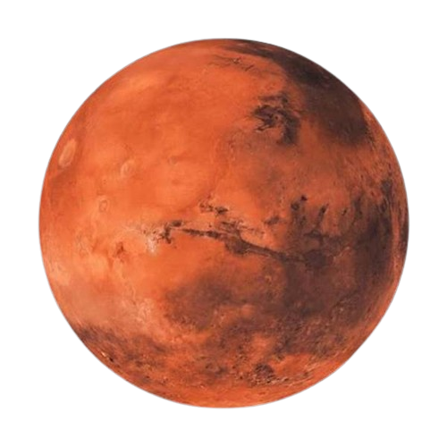

Marte
Marte é um dos nove planetas do Sistema Solar. É o quarto a partir do Sol, estando
localizado a uma distância de pouco mais de 227 milhões de quilômetros desse astro.
O planeta Marte completa uma volta ao redor do próprio eixo em 24 horas e 37 minutos,
ao passo que o movimento de translação demora 687 dias.
